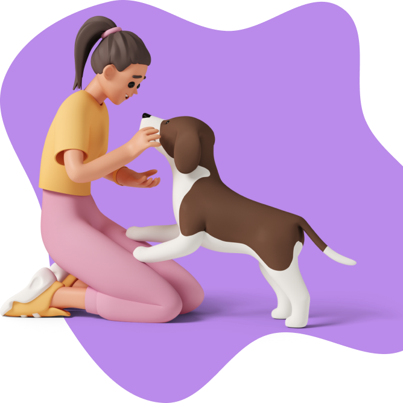

<section class="flex justify-center py-16 relative">
  <section class="max-w-6xl w-full grid grid-cols-3 min-h-[800px]">
    <article class="col-span-3 md:col-span-2 pl-10 pt-10">
      <h1 class="font-amatic text-8xl font-bold">Nossas Regras</h1>
      <p class="font-nunito text-[26px] mt-14">
        Sem sombra de dúvidas queremos
        <span class="font-bold">o melhor</span> para os nossos peludinhos,
        portanto queremos esclerecer quais são os requisitos para você ter um
        novo membro na família:
      </p>

      <div class="flex gap-8 mt-16 font-nunito mb-24">
        <ul>
          <li class="flex text-[26px] font-bold gap-x-4 items-baseline pb-4">
            Carinho e atenção não pode faltar;
          </li>
          <li class="flex text-[26px] font-bold gap-x-4 items-baseline pb-4">
            Cuide de pulgas, carrapatos, entre outros parasitas;
          </li>
          <li class="flex text-[26px] font-bold gap-x-4 items-baseline pb-4">
            Leve ao veterinário regularmente;
          </li>
          <li class="flex text-[26px] font-bold gap-x-4 items-baseline pb-4">
            Mantenha as vacinas em dia, é importante para ele(a) e para você.
          </li>
          <li class="flex text-[26px] font-bold gap-x-4 items-baseline pb-8">
            A castração é importante para previnir doenças e a procriação.
          </li>

          <li class="text-[26px]">Todo animal merece respeito <3</li>
        </ul>
      </div>
    </article>
    <div class="col-span-1 absolute right-0 top-8 hidden md:block">
      
    </div>
  </section>
</section>
